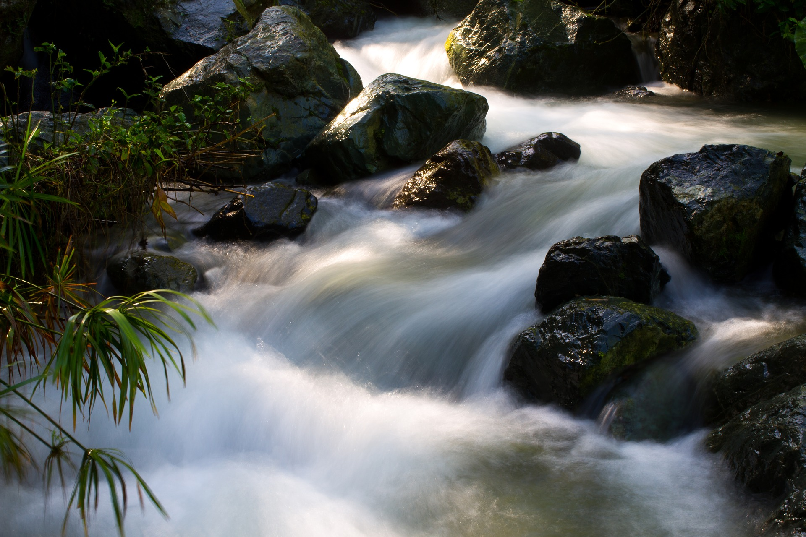

Punta Cana
La principal atracción de Punta Cana es el turismo, ofreciendo una gran variedad de complejos hoteleros. Estos reciben visitas tanto de locales como de internacionales que arriban desde el Aeropuerto Internacional de Punta Cana o el Aeropuerto Internacional La Romana..
¿Donde esta ubicado?
Jarabacoa
Es una región que ofrece como atractivos el turismo ecológico y de aventura.
El municipio se destaca como uno de los pueblos con menor contaminación y mejor calidad del aire en todo el territorio nacional, además de ser uno de los lugares más seguros y con menor índice de criminalidad en la República Dominicana.
¿Donde esta ubicado?

Santiago de los caballeros
Santiago de los Caballeros es una ciudad del norte de República Dominicana. Sobre un cerro está el Monumento de Santiago, de 1944, con una columna blanca en su parte superior y que está dedicado a los héroes de la Guerra de la Restauración Dominicana. En el centro cultural Centro León, se exhibe arte dominicano. La Fortaleza San Luis, del siglo XVII, es actualmente un museo con tanques y equipamiento militar. El Parque Duarte tiene senderos, árboles tropicales y un quiosco de música.
¿Donde esta ubicado?